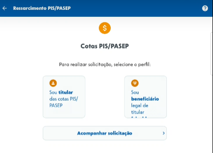

Elos Backward-From
Introdução
O processo de rastreabilidade de requisitos é uma atividade essencial na engenharia de requisitos, pois permite estabelecer e acompanhar as ligações entre diferentes artefatos produzidos ao longo do desenvolvimento de software. Por meio da rastreabilidade, é possível verificar a origem, a evolução e o impacto de cada requisito, garantindo maior controle, consistência e qualidade na construção do sistema 1.
Neste documento, serão apresentados os elos backward from dos requisitos funcionais e não funcionais do sistema FGTS. Essa abordagem demonstrará como os requisitos foram originados e se relacionam com seus artefatos de origem e elicitação. Para isso, a análise e o estabelecimento dessas relações partiram dos cartões de requisitos elaborados ao longo da disciplina, bem como dos registros de técnicas de elicitação e elementos de modelagem (como léxicos, cenários e casos de uso).
Metodologia
A metodologia aplicada para o rastreamento de requisitos em sua vertente Backward From no sistema FGTS adota como base a proposta de Toranzo, Castro e Mello (2002) 2. Assim como especificado na página de Forward From, essa abordagem demonstra especificamente como cada requisito foi originado e quais artefatos contribuíram para sua concepção e evolução inicial.
Tipos de Elos
-
Satisfação: Dependência de uma classe de origem com uma de destino para satisfação.
-
Recurso: Dependência de uma classe de origem de um recurso de uma classe de destino.
-
Responsabilidade: Participação, responsabilidade e ação de indivíduos sobre artefatos.
-
Representação: Modelagem dos requisitos em outras linguagens ou formas.
-
Alocado: Relação de uma classe de origem com um subsistema (classe de destino).
-
Agregação: Composição de elementos, partes formando um todo.
Classificação das Informações
-
Ambiental: Informações do contexto externo (leis, objetivos, padrões).
-
Organizacional: Informações da organização (missão, regras, processos).
-
Gerencial: Informações de gestão do projeto (objetivos, tarefas, restrições).
-
Desenvolvimento: Artefatos do desenvolvimento do sistema (requisitos, diagramas, código).
-
Coleta de artefatos: foram reunidos os cartões de requisitos funcionais (RF) e requisitos não funcionais (RNF), registros das técnicas de elicitação (entrevista, introspecção, observação e storytelling) e os elementos de modelagem associados (léxicos, casos de uso, cenários e histórias de usuário, NFR).
-
Identificação dos elos Backward From: para cada requisito funcional, foi analisada sua origem, mapeando-se a técnica de elicitação responsável e a ligação com os elementos iniciais de descoberta. O elo Backward From indica de onde o requisito foi derivado.
-
Documentação e organização: as informações foram organizadas em tabelas, com hiperlinks para os elementos relacionados hospedados na documentação do projeto. Também foi elaborado um cronograma com a participação dos entrevistados no processo de elicitação.
Tabela 1: Modelo da tabela de rastreabilidade
| Item da Tabela de Rastreabilidade | Descrição / Conteúdo |
|---|---|
| Descrição do requisito | Apresenta a especificação textual do requisito em questão. |
| Categoria | Classifica o requisito de acordo com as quatro categorias (Ambiental, Organizacional, Gerencial, Desenvolvimento) |
| Elementos | Lista os artefatos de origem ou outros elementos que contribuíram para a elicitação ou refinamento do requisito. |
| Elos Backward-from | Origem do requisito. |
| Coluna reservada para anexos visuais ou evidências, se aplicável. |
Fonte: Leticia Arisa
Cronograma de Participantes
Tabela 2: Participantes
| Nome | Data | Hora |
|---|---|---|
| Danielle Soares | 08/06/2025 | 01:33 |
| Eduardo de Pina | 08/06/2025 | 17:30 |
| Enzo Emir | 08/06/2025 | 13:51 |
| Leticia Arisa | 07/06/2025 | 17:10 |
| Marcelo Makoto | 07/06/2025 | 21:13 |
| Maria Eduarda | 08/06/2025 | 18:26 |
| Victor Pontual | 08/06/2025 | 13:30 |
Fonte: Enzo Emir
Sumário
- RF01 - Rastreabilidade E31
- RF03 - Rastreabilidade E22
- RF04 - Rastreabilidade E23
- RF05 - Rastreabilidade E24
- RF06 - Rastreabilidade E56
- RF07 - Rastreabilidade E57
- RF09 - Rastreabilidade E38
- RF10 - Rastreabilidade E39
- RF11 - Rastreabilidade E20
- RF12 - Rastreabilidade E01
- RF13 - Rastreabilidade E02
- RF14 - Rastreabilidade E58
- RF15 - Rastreabilidade E11
- RF16 - Rastreabilidade E12
- RF17 - Rastreabilidade E32
- RF18 - Rastreabilidade E59
- RF19 - Rastreabilidade E33
- RF20 - Rastreabilidade E34
- RF21 - Rastreabilidade E03
- RF22 - Rastreabilidade E04
- RF23 - Rastreabilidade E05
- RF24 - Rastreabilidade E13
- RF25 - Rastreabilidade E14
- RF26 - Rastreabilidade E15
- RF29 - Rastreabilidade E60
- RF32 - Rastreabilidade E40
- RF33 - Rastreabilidade E41
- RF34 - Rastreabilidade E42
- RF35 - Rastreabilidade E21
- RF36 - Rastreabilidade E16
- RF37 - Rastreabilidade E61
- RF38 - Rastreabilidade E30
- RF39 - Rastreabilidade E25
- RF40 - Rastreabilidade E43
- RF41 - Rastreabilidade E06
- RNF01 - Rastreabilidade E26
- RNF02 - Rastreabilidade E27
- RNF03 - Rastreabilidade E62
- RNF04 - Rastreabilidade E35
- RNF05 - Rastreabilidade E07
- RNF06 - Rastreabilidade E17
- RNF07 - Rastreabilidade E28
- RNF08 - Rastreabilidade E63
- RNF09 - Rastreabilidade E36
- RNF10 - Rastreabilidade E44
- RNF11 - Rastreabilidade E18
- RNF13 - Rastreabilidade E45
- RNF14 - Rastreabilidade E64
- RNF15 - Rastreabilidade E37
- RNF16 - Rastreabilidade E08
- RNF17 - Rastreabilidade E09
- RNF18 - Rastreabilidade E19
- RNF20 - Rastreabilidade E46
- RNF22 - Rastreabilidade E10
Backward From
EB01 - Rastreabilidade Backward From do requisito RF12
Tabela 3: EB01 - Cartão do Requisito Funcional 12
| Item | Descrição |
|---|---|
| Descrição do requisito | O aplicativo deve exibir informações detalhadas sobre o histórico de movimentações financeiras |
| Categoria | Desenvolvimento |
| Elementos | RF12, IS09 |
| Elos Backward-from | Agregação - O requisito originou-se da Técnica de Introspecção IS09 |
| Não implementado |
Fonte: Leticia Arisa
EB02 - Rastreabilidade Backward From do requisito RF13
Tabela 4: EB02 - Cartão do Requisito Funcional 13
| Item | Descrição |
|---|---|
| Descrição do requisito | O aplicativo deve permitir o filtro do extrato por data (mês e ano) |
| Categoria | Desenvolvimento |
| Elementos | RF13, IS10 |
| Elos Backward-from | Agregação - O requisito originou-se da Técnica de Introspecção IS10 |
| Não implementado |
Fonte: Leticia Arisa
EB03 - Rastreabilidade Backward From do requisito RF21
Tabela 5: EB03 - Cartão do Requisito Funcional 21
| Item | Descrição |
|---|---|
| Descrição do requisito | O aplicativo deve apresentar resumo de empregadores anteriores com botão para consultar contas vinculadas ao FGTS |
| Categoria | Desenvolvimento |
| Elementos | RF21, OB02 |
| Elos Backward-from | Agregação - O requisito originou-se da Técnica de Observação OB02 |
| Imagem do Aplicativo |
Fonte: Leticia Arisa
EB04 - Rastreabilidade Backward From do requisito RF22
Tabela 6: EB04 - Cartão do Requisito Funcional 22
| Item | Descrição |
|---|---|
| Descrição do requisito | O aplicativo deve mostrar o nome completo dos empregadores anteriores |
| Categoria | Desenvolvimento |
| Elementos | RF22, OB05 |
| Elos Backward-from | Agregação - O requisito originou-se da Técnica de Observação OB05 |
| Não implementado |
Fonte: Leticia Arisa
EB05 - Rastreabilidade Backward From do requisito RF23
Tabela 7: EB05 - Cartão do Requisito Funcional 23
| Item | Descrição |
|---|---|
| Descrição do requisito | O aplicativo deve disponibilizar histórico de saques realizados |
| Categoria | Desenvolvimento |
| Elementos | RF23, OB06 |
| Elos Backward-from | Agregação - O requisito originou-se da Técnica de Observação OB06 |
 Imagem do Aplicativo |
Fonte: Leticia Arisa
EB06 - Rastreabilidade Backward From do requisito RF41
Tabela 8: EB06 - Cartão do Requisito Funcional 41
| Item | Descrição |
|---|---|
| Descrição do requisito | O aplicativo deve possibilitar o envio de documentos digitalizados (PDF, imagem) para comprovação de situações específicas de saque (ex: doença grave, aposentadoria). |
| Categoria | Desenvolvimento |
| Elementos | RF41, BS03 |
| Elos Backward-from | Agregação - O requisito originou-se da Técnica de Brainstrorming BS03 |
| Não implementado |
Fonte: Leticia Arisa
EB07 - Rastreabilidade Backward From do requisito RNF05
Tabela 9: EB07 - Cartão do Requisito Não Funcional 05
| Item | Descrição |
|---|---|
| Descrição do requisito | O aplicativo deve ser confiável e evitar falhas ou inconsistências nos processos |
| Categoria | Desenvolvimento |
| Elementos | RNF05, EN11 |
| Elos Backward-from | Agregação - O requisito originou-se da Técnica de Entrevista EN11 |
Fonte: Leticia Arisa
EB08 - Rastreabilidade Backward From do requisito RNF16
Tabela 10: EB08 - Cartão do Requisito Não Funcional 16
| Item | Descrição |
|---|---|
| Descrição do requisito | Garantir tempo de resposta de até 1 segundo para o cadastro da conta bancária |
| Categoria | Desenvolvimento |
| Elementos | RNF16, ST017 |
| Elos Backward-from | Agregação - O requisito originou-se da Técnica de Storytelling ST017 |
Fonte: Leticia Arisa
EB09 - Rastreabilidade Backward From do requisito RNF17
Tabela 11: EB09 - Cartão do Requisito Não Funcional 17
| Item | Descrição |
|---|---|
| Descrição do requisito | Garantir tempo de resposta de até 1 segundo para a solicitação de saque |
| Categoria | Desenvolvimento |
| Elementos | RNF17, ST018 |
| Elos Backward-from | Agregação - O requisito originou-se da Técnica de Storytelling ST018 |
Fonte: Leticia Arisa
EB10 - Rastreabilidade Backward From do requisito RNF22
Tabela 12: EB10 - Cartão do Requisito Não Funcional 22
| Item | Descrição |
|---|---|
| Descrição do requisito | A aplicação deve estar em conformidade com diretrizes de acessibilidade, garantindo acesso a pessoas com deficiência visual, auditiva ou motora |
| Categoria | Desenvolvimento |
| Elementos | RNF22, IS20 |
| Elos Backward-from | Agregação - O requisito originou-se da Técnica de Introspecção IS20 |
Fonte: Leticia Arisa
EB11 - Rastreabilidade Backward From do requisito RF15
Tabela 13: EB11 - Cartão do Requisito Funcional 15
| Item | Descrição |
|---|---|
| Descrição do requisito | O aplicativo deve permitir que o usuário entre em contato com um assistente via chat |
| Categoria | Desenvolvimento |
| Elementos | RF15, IS13 |
| Elos Backward-from | Agregação - O requisito originou-se da Técnica de Introspecção IS13 |
| Não implementado |
Fonte: Marcelo Makoto
EB12 - Rastreabilidade Backward From do requisito RF16
Tabela 14: E12 - Cartão do Requisito Funcional 16
| Item | Descrição |
|---|---|
| Descrição do requisito | O aplicativo deve disponibilizar um campo de busca para facilitar a localização de funcionalidades |
| Categoria | Desenvolvimento |
| Elementos | RF16, IS14 |
| Elos Backward-from | Agregação - O requisito originou-se da Técnica de Introspecção IS14 |
| Não implementado |
Fonte: Marcelo Makoto
EB13 - Rastreabilidade Backward From do requisito RF24
Tabela 15: E13 - Cartão do Requisito Funcional 24
| Item | Descrição |
|---|---|
| Descrição do requisito | O aplicativo deve ter uma aba dedicada à solicitação e acompanhamento de saques |
| Categoria | Desenvolvimento |
| Elementos | RF24, OB07 |
| Elos Backward-from | Agregação - O requisito originou-se da Técnica de Observação OB07 |
Fonte: Marcelo Makoto
EB14 - Rastreabilidade Backward From do requisito RF25
Tabela 16: E14 - Cartão do Requisito Funcional 25
| Item | Descrição |
|---|---|
| Descrição do requisito | O aplicativo deve incluir aba para itens diversos como PIS/PASEP, convocações, sistemática de saque, ajuda, etc. |
| Categoria | Desenvolvimento |
| Elementos | RF25, OB09 |
| Elos Backward-from | Agregação - O requisito originou-se da Técnica de Observação OB09 |
 |
Fonte: Marcelo Makoto
EB15 - Rastreabilidade Backward From do requisito RF26
Tabela 17: E15 - Cartão do Requisito Funcional 26
| Item | Descrição |
|---|---|
| Descrição do requisito | O aplicativo deve exibir um resumo claro dos tipos de saque disponíveis. |
| Categoria | Desenvolvimento |
| Elementos | RF26, ST02 |
| Elos Backward-from | Agregação - O requisito originou-se da Técnica de Storytelling ST02 |
 |
Fonte: Marcelo Makoto
EB16 - Rastreabilidade Backward From do requisito RF36
Tabela 18: E16 - Cartão do Requisito Funcional 36
| Item | Descrição |
|---|---|
| Descrição do requisito | O aplicativo deve permitir que o usuário solicite o saque da rescisão |
| Categoria | Desenvolvimento |
| Elementos | RF36, ST013, ST014 |
| Elos Backward-from | Agregação - O requisito originou-se da Técnica de Storytelling ST013, ST014 |
 |
Fonte: Marcelo Makoto
EB17 - Rastreabilidade Backward From do requisito RNF06
Tabela 19: E17 - Cartão do Requisito Não Funcional 06
| Item | Descrição |
|---|---|
| Descrição do requisito | O aplicativo deve funcionar corretamente mesmo com conexão instável |
| Categoria | Desenvolvimento |
| Elementos | RNF06, EN12 |
| Elos Backward-from | Agregação - O requisito originou-se da Técnica de Entrevista EN12 |
Fonte: Marcelo Makoto
EB18 - Rastreabilidade Backward From do requisito RNF11
Tabela 20: E18 - Cartão do Requisito Não Funcional 11
| Item | Descrição |
|---|---|
| Descrição do requisito | O aplicativo deve proporcionar segurança de dados pessoais |
| Categoria | Desenvolvimento |
| Elementos | RNF11, IS23 |
| Elos Backward-from | Agregação - O requisito originou-se da Técnica de Introspecção IS23 |
Fonte: Marcelo Makoto
EB19 - Rastreabilidade Backward From do requisito RNF18
Tabela 21: E19 - Cartão do Requisito Não Funcional 18
| Item | Descrição |
|---|---|
| Descrição do requisito | Garantir tempo de resposta de até 1 segundo para o processo de login |
| Categoria | Desenvolvimento |
| Elementos | RNF18, ST019 |
| Elos Backward-from | Agregação - O requisito originou-se da Técnica de Storytelling ST019 |
Fonte: Marcelo Makoto
EB20 - Rastreabilidade Backward From do requisito RF11
Tabela 22: E20 - Cartão do Requisito Funcional 11
| Item | Descrição |
|---|---|
| Descrição do requisito | O aplicativo deve fornecer informações sobre saques bloqueados |
| Categoria | Desenvolvimento |
| Elementos | RF11, IS08 |
| Elos Backward-from | Agregação - O requisito originou-se da Técnica de Introspecção IS08 |
Fonte: Danielle Soares
EB21 - Rastreabilidade Backward From do requisito RF35
Tabela 23: E21 - Cartão do Requisito Funcional 35
| Item | Descrição |
|---|---|
| Descrição do requisito | O aplicativo deve permitir o cadastro de mais de uma conta bancária de diferentes instituições financeiras |
| Categoria | Desenvolvimento |
| Elementos | RF35, IS12 |
| Elos Backward-from | Agregação - O requisito originou-se da Técnica de Introspecção IS12 |
Fonte: Danielle Soares
EB22 - Rastreabilidade Backward From do requisito RF03
Tabela 24: E22 - Cartão do Requisito Funcional 3
| Item | Descrição |
|---|---|
| Descrição do requisito | O aplicativo deve permitir consulta ao saldo da conta vinculada do FGTS |
| Categoria | Desenvolvimento |
| Elementos | RF03, EN05 |
| Elos Backward-from | Agregação - O requisito originou-se da Técnica de Entrevista EN05 |
 |
Fonte: Danielle Soares
EB23 - Rastreabilidade Backward From do requisito RF04
Tabela 25: E23 - Cartão do Requisito Funcional 04
| Item | Descrição |
|---|---|
| Descrição do requisito | O aplicativo deve disponibilizar saque Saque-Aniversário |
| Categoria | Desenvolvimento |
| Elementos | RF04, EN06, ST013, ST014 |
| Elos Backward-from | Agregação - O requisito originou-se da Técnica de Entrevista e Storytelling EN06, ST013, ST014 |
Fonte: Danielle Soares
EB24 - Rastreabilidade Backward From do requisito RF05
Tabela 26: E24 - Cartão do Requisito Funcional 05
| Item | Descrição |
|---|---|
| Descrição do requisito | O aplicativo deve permitir a atualização dos dados pessoais do usuário |
| Categoria | Desenvolvimento |
| Elementos | RF05, IS01 |
| Elos Backward-from | Agregação - O requisito originou-se da Técnica de Intorspecção IS01 |
Fonte: Danielle Soares
EB25 - Rastreabilidade Backward From do requisito RF39
Tabela 27: E25 - Cartão do Requisito Funcional 39
| Item | Descrição |
|---|---|
| Descrição do requisito | O aplicativo deve possuir comentários detalhados sobre cada status do saque |
| Categoria | Desenvolvimento |
| Elementos | RF39, EN02 |
| Elos Backward-from | Agregação - O requisito originou-se da Técnica de Entrevista EN02 |
Fonte: Danielle Soares
EB26 - Rastreabilidade Backward From do requisito RNF01
Tabela 28: E26 - Cartão do Requisito Não Funcional 01
| Item | Descrição |
|---|---|
| Descrição do requisito | A aplicação deve apresentar uma interface simples, com elementos visuais organizados e linguagem acessível, facilitando a navegação. |
| Categoria | Desenvolvimento |
| Elementos | RNF01, EN07, IS20, OB11, ST01, ST04 |
| Elos Backward-from | Agregação - O requisito originou-se da Técnica de Entrevista, Introspecção, Observação e Storytelling EN07, IS20, OB11, ST01, ST04 |
Fonte: Danielle Soares
EB27 - Rastreabilidade Backward From do requisito RNF02
Tabela 29: E27 - Cartão do Requisito Não Funcional 02
| Item | Descrição |
|---|---|
| Descrição do requisito | O processo de login deve ser simplificado |
| Categoria | Desenvolvimento |
| Elementos | RNF02, EN08 |
| Elos Backward-from | Agregação - O requisito originou-se da Técnica de Entrevista EN08 |
Fonte: Danielle Soares
EB28 - Rastreabilidade Backward From do requisito RNF07
Tabela 30: E28 - Cartão do Requisito Não Funcional 07
| Item | Descrição |
|---|---|
| Descrição do requisito | O aplicativo deve fornecer as mesmas funcionalidades para diferentes plataformas e versões |
| Categoria | Desenvolvimento |
| Elementos | RNF07, IS18 |
| Elos Backward-from | Agregação - O requisito originou-se da Técnica de Introspecção IS18 |
Fonte: Danielle Soares
EB29 - Rastreabilidade Backward From do requisito RF08
Tabela 31: E29 - Cartão do Requisito Funcional 08
| Item | Descrição |
|---|---|
| Descrição do requisito | O aplicativo deve exibir os status atualizados do saque. |
| Categoria | Desenvolvimento |
| Elementos | RF08, IS05, EN02 |
| Elos Backward-from | Agregação - O requisito originou-se da introspecção IS05. |
| Não Implementado |
Fonte: Enzo Emir
EB30 - Rastreabilidade Backward From do requisito RF38
Tabela 32: E30 - Cartão do Requisito Funcional 38
| Item | Descrição |
|---|---|
| Descrição do requisito | O aplicativo deve notificar o usuário sobre o status do saque solicitado. |
| Categoria | Desenvolvimento |
| Elementos | RF38, IS05 |
| Elos Backward-from | Agregação - O requisito originou-se da introspecção IS05. |
| Não Implementado |
Fonte: Enzo Emir
EB31 - Rastreabilidade Backward From do requisito RF01
Tabela 33: E31 - Cartão do Requisito Funcional 01
| Item | Descrição |
|---|---|
| Descrição do requisito | O aplicativo deve informar claramente as datas previstas para liberação de valores. |
| Categoria | Desenvolvimento |
| Elementos | RF01, EN03 |
| Elos Backward-from | Agregação - O requisito originou-se da entrevista EN03. |
| Não Implementado |
Fonte: Enzo Emir
EB32 - Rastreabilidade Backward From do requisito RF17
Tabela 34: E32 - Cartão do Requisito Funcional 17
| Item | Descrição |
|---|---|
| Descrição do requisito | O aplicativo deve conter uma seção de ajuda com orientações sobre o FGTS e PIS/PAESP. |
| Categoria | Desenvolvimento |
| Elementos | RF17, IS15 |
| Elos Backward-from | Agregação - O requisito originou-se da introspecção IS15. |
 |
Fonte: Enzo Emir
EB33 - Rastreabilidade Backward From do requisito RF19
Tabela 35: E33 - Cartão do Requisito Funcional 19
| Item | Descrição |
|---|---|
| Descrição do requisito | O aplicativo deve permitir a solicitação de ressarcimento de valores do PIS/PASEP. |
| Categoria | Desenvolvimento |
| Elementos | RF19, IS17 |
| Elos Backward-from | Agregação - O requisito originou-se da introspecção IS17. |
|  |
Fonte: Enzo Emir
EB34 - Rastreabilidade Backward From do requisito RF20
Tabela 36: E34 - Cartão do Requisito Funcional 20
| Item | Descrição |
|---|---|
| Descrição do requisito | O aplicativo deve permitir login seguro pelo aplicativo. |
| Categoria | Desenvolvimento |
| Elementos | RF20, OB01 |
| Elos Backward-from | Agregação - O requisito originou-se da observação OB01. |
 |
Fonte: Enzo Emir
EB35 - Rastreabilidade Backward From do requisito RNF04
Tabela 37: E35 - Cartão do Requisito Não Funcional 04
| Item | Descrição |
|---|---|
| Descrição do requisito | Os prazos informados no app devem ser cumpridos fielmente. |
| Categoria | Desenvolvimento |
| Elementos | RNF04, EN10 |
| Elos Backward-from | Agregação - O requisito originou-se da entrevista EN10. |
| Não Implementado |
Fonte: Enzo Emir
EB36 - Rastreabilidade Backward From do requisito RNF09
Tabela 38: E36 - Cartão do Requisito Não Funcional 09
| Item | Descrição |
|---|---|
| Descrição do requisito | O aplicativo deve aplicar princípios de acessibilidade. |
| Categoria | Desenvolvimento |
| Elementos | RNF09, IS21 |
| Elos Backward-from | Agregação - O requisito originou-se da introspecção IS21. |
| Não Implementado |
Fonte: Enzo Emir
EB37 - Rastreabilidade Backward From do requisito RNF15
Tabela 39: E37 - Cartão do Requisito Não Funcional 15
| Item | Descrição |
|---|---|
| Descrição do requisito | As informações devem estar organizadas de forma clara e com terminologia compreensível para o usuário. |
| Categoria | Desenvolvimento |
| Elementos | RNF15, OB13 |
| Elos Backward-from | Agregação - O requisito originou-se da observação OB13. |
Fonte: Enzo Emir
EB38 - Rastreabilidade Backward From do requisito RF09
Tabela 40: E38 - Cartão do Requisito Funcional 09
| Item | Descrição |
|---|---|
| Descrição do requisito | O sistema deve permitir que o usuário cancele um saque solicitado |
| Categoria | Desenvolvimento |
| Elementos | RF09, IS06 |
| Elos Backward-from | Agregação - O requisito originou-se da Técnica de Introspecção IS06 |
Fonte: Victor Pontual
EB39 - Rastreabilidade Backward From do requisito RF10
Tabela 41: E39 - Cartão do Requisito Funcional 10
| Item | Descrição |
|---|---|
| Descrição do requisito | O aplicativo deve permitir o filtro dos saques por tipo (ex: aniversário, doença, falecimento) |
| Categoria | Desenvolvimento |
| Elementos | RF10, IS07 |
| Elos Backward-from | Agregação - O requisito originou-se da Técnica de Introspecção IS07 |
Fonte: Victor Pontual
EB40 - Rastreabilidade Backward From do requisito RF32
Tabela 42: E40 - Cartão do Requisito Funcional 32
| Item | Descrição |
|---|---|
| Descrição do requisito | O aplicativo deve oferecer uma interface de login simples. |
| Categoria | Desenvolvimento |
| Elementos | RF32, ST011 |
| Elos Backward-from | Agregação - O requisito originou-se da Técnica de Storytelling ST011 |
Fonte: Victor Pontual
EB41 - Rastreabilidade Backward From do requisito RF33
Tabela 43: E41 - Cartão do Requisito Funcional 33
| Item | Descrição |
|---|---|
| Descrição do requisito | O aplicativo deve disponibilizar uma página para escolha da sistemática de saque. |
| Categoria | Desenvolvimento |
| Elementos | RF33, ST012 |
| Elos Backward-from | Agregação - O requisito originou-se da Técnica de Storytelling ST012 |
Fonte: Victor Pontual
EB42 - Rastreabilidade Backward From do requisito RF34
Tabela 44: E42 - Cartão do Requisito Funcional 34
| Item | Descrição |
|---|---|
| Descrição do requisito | O aplicativo deve exibir o termo de adesão ao usuário no primeiro acesso ao aplicativo |
| Categoria | Desenvolvimento |
| Elementos | RF34, ST016 |
| Elos Backward-from | Agregação - O requisito originou-se da Técnica de Storytelling ST016 |
Fonte: Victor Pontual
EB43 - Rastreabilidade Backward From do requisito RF40
Tabela 45: E43 - Cartão do Requisito Funcional 40
| Item | Descrição |
|---|---|
| Descrição do requisito | O aplicativo deve enviar notificação ao usuário quando o saque for recebido. |
| Categoria | Desenvolvimento |
| Elementos | RF40, ST015 |
| Elos Backward-from | Agregação - O requisito originou-se da Técnica de Storytelling ST015 |
Fonte: Victor Pontual
EB44 - Rastreabilidade Backward From do requisito RNF10
Tabela 46: E44 - Cartão do Requisito Não Funcional 10
| Item | Descrição |
|---|---|
| Descrição do requisito | O aplicativo deve estar disponível para outras plataformas, como web |
| Categoria | Desenvolvimento |
| Elementos | RNF10, IS22 |
| Elos Backward-from | Agregação - O requisito originou-se da Técnica de Instrospecção IS22 |
Fonte: Victor Pontual
EB45 - Rastreabilidade Backward From do requisito RNF13
Tabela 47: E45 - Cartão do Requisito Não Funcional 13
| Item | Descrição |
|---|---|
| Descrição do requisito | O sistema deve garantir segurança firme com verificação de dados pelo usuário |
| Categoria | Desenvolvimento |
| Elementos | RNF13, OB10 |
| Elos Backward-from | Agregação - O requisito originou-se da Técnica de Observação OB10 |
Fonte: Victor Pontual
EB46 - Rastreabilidade Backward From do requisito RNF20
Tabela 48: E46 - Cartão do Requisito Não Funcional 20
| Item | Descrição |
|---|---|
| Descrição do requisito | Saque-rescisão deve atender princípios de acessibilidade |
| Categoria | Desenvolvimento |
| Elementos | RNF20, EN06 |
| Elos Backward-from | Agregação - O requisito originou-se da Técnica de Entrevista EN06 |
Fonte: Victor Pontual
EB47 - Rastreabilidade Backward From do requisito RF02
Tabela 49: EB47 - Cartão do Requisito Funcional 02
| Item | Descrição |
|---|---|
| Descrição do requisito | O aplicativo deve oferecer canal de suporte ou chatbot para esclarecer dúvidas |
| Categoria | Desenvolvimento |
| Elementos | EN04 |
| Elos Backward-from | Agregação - O requisito originou-se da Técnica de Entrevista EN04 |
| - Não implementado - Link para prototipação: |
Fonte: Maria Eduarda
EB48 - Rastreabilidade Backward From do requisito RF30
Tabela 50: EB48 - Cartão do Requisito Funcional 30
| Item | Descrição |
|---|---|
| Descrição do requisito | O aplicativo deve permitir o ajuste do tamanho das fontes na interface. |
| Categoria | Desenvolvimento |
| Elementos | ST08 |
| Elos Backward-from | Agregação - O requisito originou-se da Técnica de Storytelling ST08 |
| - Não implementado - Link para prototipação: |
Fonte: Maria Eduarda
EB49 - Rastreabilidade Backward From do requisito RF27
Tabela 51: EB49 - Cartão do Requisito Funcional 27
| Item | Descrição |
|---|---|
| Descrição do requisito | O aplicativo deve enviar notificação sobre o andamento do saque. |
| Categoria | Desenvolvimento |
| Elementos | ST02, ST09, ST015 |
| Elos Backward-from | Agregação - O requisito originou-se da Técnica de Storytelling ST03, ST09, ST015 |
| Imagem do Aplicativo |
Fonte: Maria Eduarda
EB50 - Rastreabilidade Backward From do requisito RF28
Tabela 52: EB50 - Cartão do Requisito Funcional 28
| Item | Descrição |
|---|---|
| Descrição do requisito | O aplicativo deve permitir a solicitação de saques. |
| Categoria | Desenvolvimento |
| Elementos | EN01, IS03, ST06, OB03 |
| Elos Backward-from | Agregação - O requisito originou-se das Técnicas de Entrevista, Introspecção, Storytelling e Observação EN01, IS03, ST06, OB03 |
| Imagem do Aplicativo |
Fonte: Maria Eduarda
EB51 - Rastreabilidade Backward From do requisito RF31
Tabela 53: EB51 - Cartão do Requisito Funcional 31
| Item | Descrição |
|---|---|
| Descrição do requisito | O aplicativo deve permitir a visualização dos dados da conta bancária cadastrada. |
| Categoria | Desenvolvimento |
| Elementos | ST010 |
| Elos Backward-from | Agregação - O requisito originou-se das Técnicas de Entrevista, Introspecção, Storytelling e Observação ST010 |
| Imagem do Aplicativo |
Fonte: Maria Eduarda
EB52 - Rastreabilidade Backward From do requisito RF42
Tabela 54: EB52 - Cartão do Requisito Funcional 42
| Item | Descrição |
|---|---|
| Descrição do requisito | O aplicativo deve permitir o agendamento de saque futuro FGTS |
| Categoria | Desenvolvimento |
| Elementos | BS10 |
| Elos Backward-from | Agregação - O requisito originou-se das Técnicas de Brainstorming BS10 |
| - Não implementado - Link para prototipação: |
Fonte: Maria Eduarda
EB53 - Rastreabilidade Backward From do requisito RNF21
Tabela 55: EB53 - Cartão do Requisito Não Funcional 21
| Item | Descrição |
|---|---|
| Descrição do requisito | Os menus devem ser autoexplicativos, com estrutura hierárquica lógica e nomenclatura padronizada |
| Categoria | Desenvolvimento |
| Elementos | IS19, OB11 |
| Elos Backward-from | Agregação - O requisito originou-se das Técnicas de Introspecção e Observação IS19, OB11 |
| Imagem do Aplicativo |
Fonte: Maria Eduarda
EB54 - Rastreabilidade Backward From do requisito RNF12
Tabela 56: EB54 - Cartão do Requisito Não Funcional 12
| Item | Descrição |
|---|---|
| Descrição do requisito | O aplicativo deve proporcionar agilidade ao acessar as funcionalidades |
| Categoria | Desenvolvimento |
| Elementos | IS24 |
| Elos Backward-from | Agregação - O requisito originou-se da Técnica de Introspecção IS24 |
| Imagem do Aplicativo |
Fonte: Maria Eduarda
EB55 - Rastreabilidade Backward From do requisito RNF19
Tabela 57: EB55 - Cartão do Requisito Não Funcional 19
| Item | Descrição |
|---|---|
| Descrição do requisito | Saque-aniversário deve atender princípios de acessibilidade |
| Categoria | Desenvolvimento |
| Elementos | IS24 |
| Elos Backward-from | Agregação - O requisito originou-se da Técnica de Entrevista EN06 |
| Imagem do Aplicativo |
Fonte: Maria Eduarda
EB56 - Rastreabilidade Backward From do requisito RF06
Tabela 58: EB56 - Cartão do Requisito Funcional 06
| Item | Descrição |
|---|---|
| Descrição do requisito | O sistema deve permitir a consulta de dados pessoais do usuário. |
| Categoria | Desenvolvimento |
| Elementos | RF06, IS02, EN02 |
| Elos Backward-from | Agregação - O requisito originou-se das Técnicas de Elicitação Introspecção e Entrevista: IS02 e EN02. |
Fonte: Eduardo de Pina
EB57 - Rastreabilidade Backward From do RF07
Tabela 59: EB57 - Cartão do Requisito Funcional 07
| Item | Descrição |
|---|---|
| Descrição do requisito | O aplicativo deve permitir que o usuário visualize o extrato detalhado de movimentações financeiras. |
| Categoria | Desenvolvimento |
| Elementos | RF07, IS04, OB04 |
| Elos Backward-from | Agregação - O requisito originou-se das Técnicas de Elicitação Introspecção e Observação: IS04 e OB04. |
Fonte: Eduardo de Pina
EB58 - Rastreabilidade Backward From do requisito RF14
Tabela 60: EB58 - Cartão do Requisito Funcional 14
| Item | Descrição |
|---|---|
| Descrição do requisito | O aplicativo deve permitir o cadastro de uma conta bancária. |
| Categoria | Desenvolvimento |
| Elementos | RF14, IS11, ST05, OB08 |
| Elos Backward-from | Agregação - O requisito originou-se da Técnicas de Elicitação Introspecção, Storytelling e Observação: IS11, ST05 e OB08. |
Fonte: Eduardo de Pina
EB59 - Rastreabilidade Backward From do requisito RF18
Tabela 61: EB59 - Cartão do Requisito Funcional 18
| Item | Descrição |
|---|---|
| Descrição do requisito | O aplicativo deve conter uma seção de ajuda com orientações sobre o uso do aplicativo. |
| Categoria | Desenvolvimento |
| Elementos | RF18, EN02 |
| Elos Backward-from | Agregação - O requisito originou-se da Técnica de Elicitação Entrevista: EN02 |
| Não implementado |
Fonte: Eduardo de Pina
EB60 - Rastreabilidade Backward From do requisito RF29
Tabela 62: EB60 - Cartão do Requisito Funcional 29
| Item | Descrição |
|---|---|
| Descrição do requisito | O aplicativo deve disponibilizar um guia interativo para orientar o usuário durante o processo. |
| Categoria | Desenvolvimento |
| Elementos | RF29, ST07 |
| Elos Backward-from | Agregação - O requisito originou-se da Técnica de Elicitação Storytelling: ST07 |
| Não implementado |
Fonte: Eduardo de Pina
EB61 - Rastreabilidade Backward From do requisito RF37
Tabela 63: EB61 - Cartão do Requisito Funcional 37
| Item | Descrição |
|---|---|
| Descrição do requisito | O aplicativo deve permitir que o usuário consulte seu saldo disponível para saque. |
| Categoria | Desenvolvimento |
| Elementos | RF37, OB04 |
| Elos Backward-from | Agregação - O requisito originou-se da Técnica de Elicitação Observação: OB04. |
Fonte: Eduardo de Pina
EB53 - Rastreabilidade Backward From do requisito RNF03
Tabela 64: EB62 - Cartão do Requisito Não Funcional 03
| Item | Descrição |
|---|---|
| Descrição do requisito | O sistema deve apresentar informações de forma transparente e confiável. |
| Categoria | Desenvolvimento |
| Elementos | RNF03, EN09 |
| Elos Backward-from | Agregação - O requisito originou-se da Técnica de Elicitação Entrevista: EN09. |
| Não implementado |
Fonte: Eduardo de Pina
EB63 - Rastreabilidade Backward From do requisito RNF08
Tabela 65: EB63 - Cartão do Requisito Não Funcional 08
| Item | Descrição |
|---|---|
| Descrição do requisito | Os menus devem fornecer informações não repetidas. |
| Categoria | Desenvolvimento |
| Elementos | RNF08, IS19 |
| Elos Backward-from | Agregação - O requisito originou-se da Técnica de Elicitação Introspecção: IS19. |
| Não implementado |
Fonte: Eduardo de Pina
EB64 - Rastreabilidade Backward From do requisito RNF14
Tabela 66: EB64 - Cartão do Requisito Não Funcional 14
| Item | Descrição |
|---|---|
| Descrição do requisito | A aplicação deve exibir notificações ou notícias úteis de forma acessível. |
| Categoria | Desenvolvimento |
| Elementos | RNF14, OB12. |
| Elos Backward-from | Agregação - O requisito originou-se da Técnica de Elicitação Observação: OB12 |
|
|
Fonte: Eduardo de Pina
Referências Bibliográficas
1. AYÃO, Miriam; LEITE, Julio. Rastreabilidade de Requisitos. PUC-Rio: Departamento de Informática, ISSN 0103-9741, Rio de Janeiro, 2005. Disponível em: https://www-di.inf.puc-rio.br/~julio/rastre.pdf. Acesso em: 08 de jun. de 2025
2. TORANZO, M.; CASTRO, J; MELLO, E. Uma proposta para melhorar o rastreamento de requisitos. PUC-Rio: Workshop em Engenharia de Requisitos, Rio de Janeiro, 2002. Disponível em: http://wer.inf.puc-rio.br/WERpapers/artigos/artigos_WER02/toranzo.pdf. Acesso em: 08 de jun. de 2025.
Figura 1: Foto da referência 1

Fonte: AYÃO, LEITE, 2005
Figura 2: Foto da referência 2
Fonte: TORANZO, CASTO, MELLO, 2002
Histórico de Versão
| Versão | Data | Descrição | Autor(es) | Revisor(es) |
|---|---|---|---|---|
1.0 |
07/06/2025 | Criação da página | Enzo Emir | Leticia Arisa |
1.1 |
07/06/2025 | Adição das tabelas EB01 - EB10 | Leticia Arisa | Marcelo Makoto |
1.2 |
07/06/2025 | Adição das tabelas EB11 - EB19 | Marcelo Makoto | Enzo Emir |
1.3 |
08/06/2025 | Adição das tabelas EB20 - EB28 | Danielle Soares | Enzo Emir |
1.4 |
08/06/2025 | Adição das tabelas EB29 - EB37 | Enzo Emir | Victor Pontual |
1.5 |
08/06/2025 | Adição das tabelas EB38 - EB46 | Victor Pontual | Danielle Soares |
1.6 |
08/06/2025 | Adição dos textos de introdução e metodologia | Enzo Emir | Danielle Soares |
1.7 |
08/06/2025 | Sumário | Danielle Soares | Leticia Arisa |
1.8 |
08/06/2025 | Adição das tabelas EB47 - EB55 | Maria Eduarda | Danielle Soares |
1.9 |
08/06/2025 | Prints dos requisitos RF03, RF04, RF05 | Danielle Soares | Leticia Arisa |
2.0 |
08/06/2025 | Prints dos requisitos | Leticia Arisa | Maria Eduarda |
2.1 |
08/06/2025 | Adicionando prints | Maria Eduarda | Eduardo de Pina |
2.2 |
08/06/2025 | Adição das tabelas EB56 - EB64 | Eduardo de Pina | Enzo Emir |
2.3 |
13/06/2025 | Arrumando links das imagens | Enzo Emir | Danielle Soares |
2.4 |
17/06/2025 | Ajustando links dos léxicos | Danielle Soares | Eduardo de Pina |
2.5 |
21/06/2025 | Adição de prints faltantes | Eduardo de Pina | Maria Eduarda |
2.6 |
22/06/2025 | Adição das prototipações nos cartões correspondentes | Enzo Emir | Victor Pontual |
2.7 |
22/06/2025 | Adição de revisores | Victor Pontual | Marcelo Makoto |
2.8 |
28/06/2025 | Prints dos requisitos não implementados RF35, RF39 e RF11 | Danielle Soares | Victor Pontual |
2.9 |
07/07/2025 | correção dos elementos dos elos de minha autoria | Victor Pontual | Enzo Emir |
3.0 |
07/07/2025 | Correção dos elementos dos elos feitos por mim | Enzo Emir | Victor Pontual |
3.1 |
07/07/2025 | Correção de elementos gerais dos elos | Eduardo de Pina | Maria Eduarda |